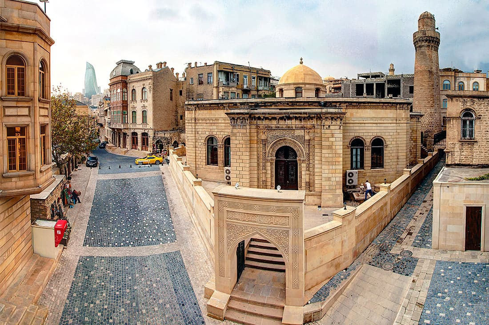
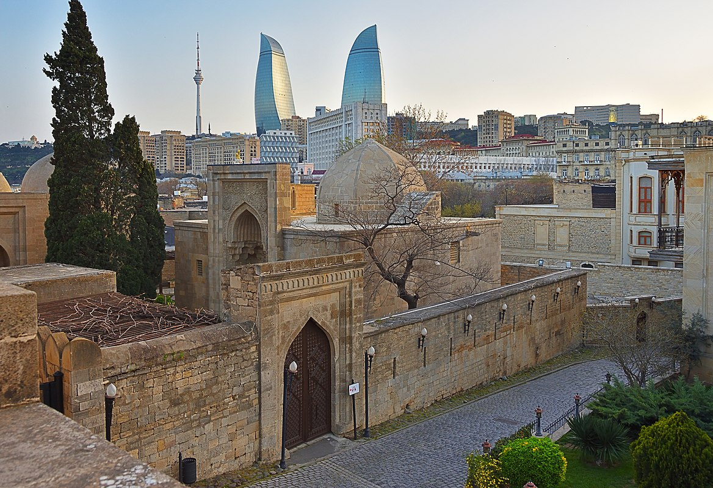
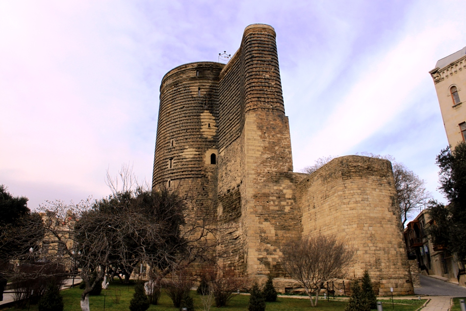

Про Памятник
Внутренный город
Площадь в центре города Баку составляет 22 га. который находится во «Внутреннем городе». Во «Внутреннем городе» находятся памятники истории и архитектуры, охватывающие более 50 различных периодов. Примерами памятников, сохранившихся до наших дней, являются Дворец Ширваншахов, Девичий замок и мечеть Синиггала.
Дворец Ширваншахов
Дворец Ширваншахов, одна из архитектурных жемчужин Азербайджана, был построен в начале 15 века и включает в себя комплекс, дворец, диванный дом, усыпальницу Ширваншахов, дворцовую мечеть с минаретом, баню, усыпальницу Сеида Яхья Бакуви и Диванный дом «Шарк», построенный позже. Отмечается, что первые здания комплекса были построены в 1441 году, а строительство последней «восточной» диванханы в 1558 году принадлежало архитектору Амиршаху.
ДЕВИЧЬЯ БАШНЯ
В юго-восточной части Старого города воздвигнут «Девичий замок», уникальный памятник азербайджанской архитектуры, построенный в два этапа. Нижняя часть памятника высотой до 13,7 м относится к VII-VI векам до н.э., как считают многие ученые. Высота замка 29,7 м, а диаметр 16,5 м. Толщина его стен составляет 5 метров в нижней части и 4 метра в верхней части. Замок состоит из 8 уровней, внутри находится колодец глубиной 21 метр, вырытый до слоев воды.
КОСТЕР
Храм огня «Атешгях» расположен в 30 километрах от Баку, в юго-восточной части поселка Сураханы Апшеронского полуострова. «Атешгях» — храм огня, построенный в 17-18 веках на месте вечного неугасимого огня, из которого выходили природные газы. Самая ранняя структура храма, конюшня, датируется 1713 годом нашей эры, а центральная святыня была построена в 1810 году на средства купца Канчанагара.
Гобустан
Одним из старейших и богатейших исторических памятников Баку является Гобустан, известный в мире своими наскальными рисунками. В Гобустане много наскальных рисунков, стоянок, поселений, могильных памятников и т.д., являющихся свидетелями каменного века и великого прошлого азербайджанского народа, в горах Буюкдаш, Кичкдаш, Чингирдаг, Сонгардаг и Шихгая. На территории Беюкдаша можно найти памятники всех периодов от мезолита до средневековья.
Замок Мардакян
В поселке Мардакян города Баку есть два замка с древней историей. Один из них имеет четыре угла и был построен в 12 веке Ахситаном, сыном ширваншаха Манчара, и воздвигнут этот замок в честь блестящей победы Ахситана над врагом. Высота замка 22 метра, толщина снизу 2,10 метра, сверху 1,60 метра. Изнутри замок разделен на 5 уровней. 2-й форт круглый, местные жители называют этот форт Замком Ших. Высота замка 12,5 метров, внутреннее убранство состоит из 3-х уровней. Из надписи над замком известно, что он был построен в 1232 году архитектором Абдулмаджидом Масуд оглы.
Замок Баил
Исторический архитектурный памятник, расположенный недалеко от поселка Баил города Баку и в настоящее время находящийся под морской водой. Замок Баил, одно из красивейших произведений ширвано-абшеронской школы зодчества, построенный в 13 веке, иногда поднимается на поверхность моря из-за подъема и опускания Каспийского моря, а иногда становится невидимым по мере его опускания. в воду. Хотя замок называют по-разному («Подводный город», «Баиловы камни», «Сабаильский замок», «Карвансара», «Ханегах», «Комрукхана» и др.), в научной литературе он чаще известен как «Баиловский замок». Баиловский замок имеет вытянутый план, соответствующий форме острова. Длина крепости 180 м, а средняя ширина 35 м. Стены замка были укреплены шестью полукруглыми башнями на востоке и пятью на западе (как в Бакинском замке).Строительство Баиловского замка было завершено в военно-политическую эпоху - когда монгольские походы сотрясали всю Среднюю Восток (в 1234-1235 гг.). Однако жизнь этого великолепного замка, построенного на острове недалеко от побережья, была очень короткой. По мнению ученых, он затонул в море в результате сильного землетрясения, произошедшего в 1306 году.